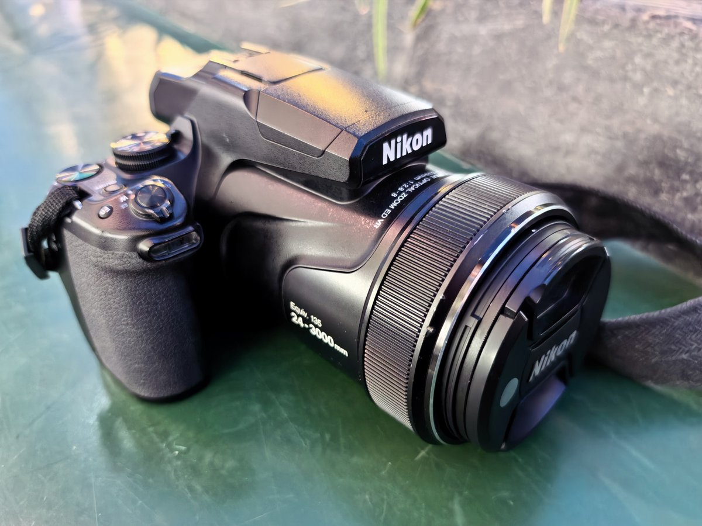
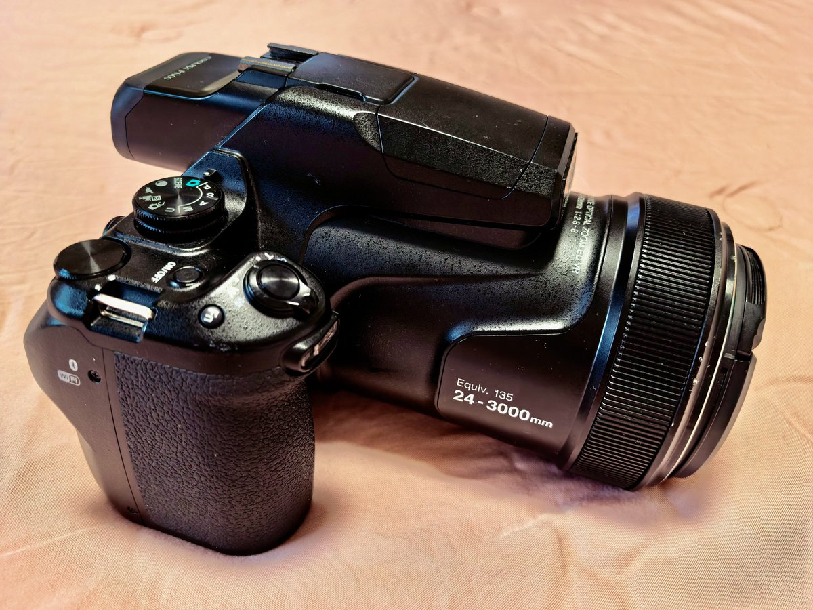
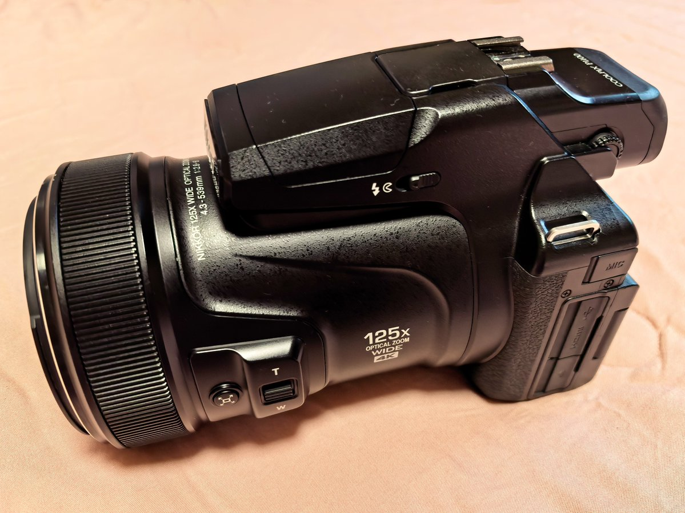
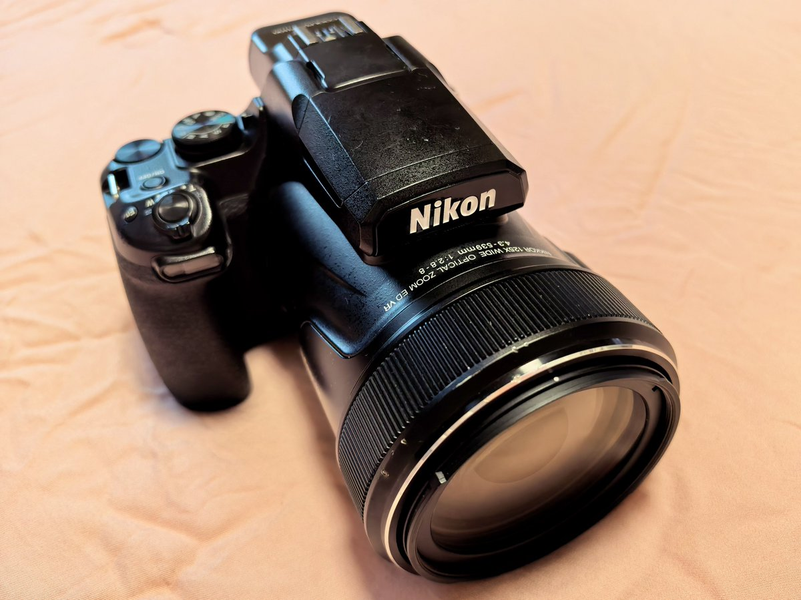

🥹纪念一下这只陪咱见证了朱雀三号遥二的Nikon COOLPIX P1100～要把她还回去了好舍不得哇ヘ(>_<ヘ)
跟着咱跑了两次东风航天城，拍到了东半球第一只陆地回收火箭🥰不过最重要的是，她是咱这辈子用过的第一台相机…努力啃说明书学着用才知道，原来相机里有这么令人满足的操纵手感和人体工学哇～
第一次玩就用上了3000mm等效焦距，有效缓解了咱常年用手机引发的长焦不足恐惧症）但觉得她的125x放大除了解决“能拍到”，画质上并没有什么出色…比如感觉原图色彩远不如咱的手机，是都要依赖后期处理的吗…
还有咱超喜欢她的外观！这个有点长度的一体式镜头搭配机身，比例是绝赞的协调😘～再加上侧边纹路塑造的流线感，在咱眼里比一般微单飒多了…好爱好爱喵(⑅˘̤ ᵕ˘̤)*♡*
跟着咱跑了两次东风航天城，拍到了东半球第一只陆地回收火箭🥰不过最重要的是，她是咱这辈子用过的第一台相机…努力啃说明书学着用才知道，原来相机里有这么令人满足的操纵手感和人体工学哇～
第一次玩就用上了3000mm等效焦距，有效缓解了咱常年用手机引发的长焦不足恐惧症）但觉得她的125x放大除了解决“能拍到”，画质上并没有什么出色…比如感觉原图色彩远不如咱的手机，是都要依赖后期处理的吗…
还有咱超喜欢她的外观！这个有点长度的一体式镜头搭配机身，比例是绝赞的协调😘～再加上侧边纹路塑造的流线感，在咱眼里比一般微单飒多了…好爱好爱喵(⑅˘̤ ᵕ˘̤)*♡*



